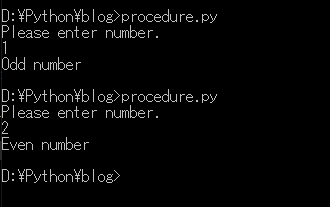
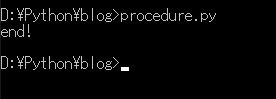
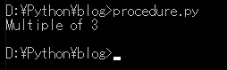
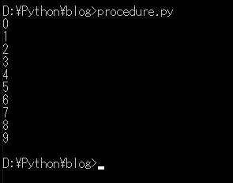
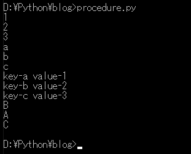
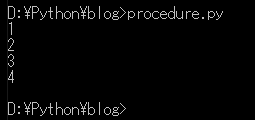
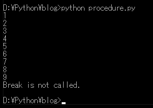
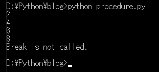
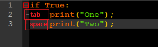
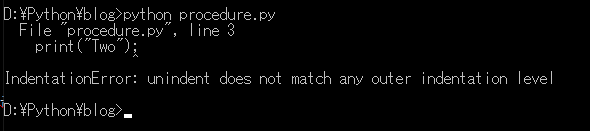

[Python] 04. 制御文(if, while, for, break, continue)とインデント
こんにちは。明月です。
この投稿は Pythonで使う制御文(if, while, for, break, continue)とインデントに関する説明です。
制御文という文字とおりにプログラムを制御するキーワードです。
例えば、aという変数にユーザー任意の数1をユーザーから受け取る時、偶数の時は「Even number」を出力して、奇数の時は「Odd number」を出力したいです。その時にaの変数が偶数、奇数かを判断することを制御文といいます。
# コンソール出力
print("Please enter number.");
# ユーザーからデータを受け取る。
a = int(input());
# 奇数の時は「Odd number」を出力
if a%2 == 1:
# コンソール出力
print("Odd number");
# 偶数の時は「Even number」を出力
else:
# コンソール出力
print("Even number");

if ~ elif ~ else
分岐文と呼ばれるifです。上の例ですこし確認しましたが、その条件式にTrueの条件になると実行する制御文です。
if 条件:
Trueの場合、実行
elif 条件:
Trueの場合、実行
else:
上のif条件がすべてFalseの場合、実行
if文は、単独で「if」のみを使うことができます。「if〜else」、「if〜elif」として使うこともできます。
でも、「elif〜else」や「elif単独」、「else単独」では使えません。
注意点は、条件式が終わると、必ずコロン（:)を付けなければならないです。
そして、条件式の中の実行区分は、他の言語の場合は、「{}」の中括弧で実行領域を設定するが、Pythonの場合はインデントを決定します。
インデントは投稿の最後に詳しく説明します。
# 変数宣言
a = 1;
# 条件にaが0かをチェックするが、aは0ではないので下記の「a is 0」は出力しない。
if a == 0:
# コンソール出力
print("a is 0.");
# コンソール出力
print("end!");

# 変数宣言
a = 6;
# 6は偶数が、3の倍数なのでifの条件に先にかける。
if a%3 == 0:
# コンソール出力
print("Multiple of 3");
# aが偶数の場合
elif a%2 == 1:
# コンソール出力
print("Odd number");
# 上のifの条件がすべて合わない場合。
else:
# コンソール出力
print("Even number");

while
whileはループです。ループは、条件がFalseになるまで繰り返し実行する制御文です。
# 変数宣言
i=0;
# iが10未満ならTrue、10以上ならFalseだ。つまりiが10になると終了するループだ。
while i < 10:
# iを出力する。
print(i);
# iを1ずつに増加。もし、この増加式がなければ、while中で繰り返す時iが永遠に0になるので無限ループになる。無限ループとは終了がないルートということ。
i=i+1;

for
他のプログラム言語のJavaやC＃は、for文は、for初期式、条件式、増減式からなるループです。
でも、Pythonの場合は、初期式、条件式、増減式ではなく、リストやタプル、ディクショナリ、セットのデータ値をシーケンスどおり取得ループです。
# リスト変数宣言
list = [1,2,3];
# タプル変数宣言
tuple = ('a','b','c');
# ディクショナリ変数宣言
dic = {'a':1,'b':2,'c':3};
# セット変数宣言
set = {'A','B','C'}
# リストの順番でデータを取得
for i in list:
# コンソール出力
print(i);
# タプルの順番でデータを取得
for i in tuple:
# コンソール出力
print(i);
# ディクショナリはキーのデータを取得
for key in dic:
# コンソール出力
print("key-" + key + " value-"+str(dic[key]))
# setはシーケンスデータではないので、順番とおりに取得することではない。
for i in set:
# コンソール出力
print(i);

break
上びwhileとforのループで条件式がありますが、条件によってループ（繰り返し）を強制的に終了するキーワードです。
# for文のループ、1から9まで繰り返す
for i in range(1,10,1):
# コンソール出力
print(i);
# iが3より大きい場合
if i > 3:
# ループを終了
break;

参考にrangeタイプは（初期値、終了値、増加値）からなるデータを作成する関数です。
ここで1から10まで1ずつ増加するrange値を順に1,2,3...と出力して、9まで出力すると正常ですが、ループの中にif文があり、iの値が3を超えるとループが止まります。つまり、4になるとbreakで繰り返しをロープが終了することです。
それで1から4まで出力することです。
ここでbreakを使用すれば、forやwhileにelseを付けることができます。このelse文はループの中でbreakを会わなければ実行される構文です。
# for文のループ、1から9まで繰り返す
for i in range(1,10,1):
# コンソール出力
print(i);
# iが10より大きい場合
if i > 10:
# ループを終了
break;
else:
# breakではなく、ループが最後まで繰り返したらコンソール出力する。
print ("Break is not called.");

continue
continueはbreakと似ている概念です。ループ（繰り返し）を実行する時、特定の値はジャンプする時があります。ジャンプという表現が少しあいまいですが、breakみたいにループを終了することではなく、continueをあえばループが開始ところに戻るという意味します。
# for文のループ、1から9まで繰り返す
for i in range(1,10,1):
# 奇数の場合
if i%2 == 1:
# ジャンプ、forのところに戻る。
continue;
# コンソール出力
print(i);
else :
# breakではなく、ループが最後まで繰り返したらコンソール出力する。
print ("Break is not called.")

奇数の場合はジャンプしましたので、printが実行できなかったんです。なので、出力が偶数だけです。
インデント
少し説明の順序が合わないですが、Pythonでこのインデントは非常に重要です。
他のプログラミング言語の場合は、制御文や関数、クラスなどのコードの範囲を示す「{}」の中括弧がありますが、Pythonのはそういうことはありません。
ただインデントで表現します。例えばif文の領域を示したいならインデントを合わせて使用します。
# if文
if True:
# ここはifの領域だ。
print("if area");
#ここはifの領域ではない。
print("none area");
上をみれば、二つのprint関数があります。上のprintはifの領域になってインデントがあります。下のprintはインデントがないのでifの領域ではありません。
つまり最初のprint関数の前にインデントがありなしで領域区分をします。
インデントは、最も一般的なのが、スペース4欄、またはスペース2欄、タブキがあります。
このインデントは、互いに混在して使用することができません。最初のインデントをタブキーとして使用したが、次はスペース4カーンを使用すると、エラーが発生します。

上のメモ帳にはタブキーとスペース4欄が似てます。
でも実行するとエラーが発生します。

Pythonの標準コードはpep8を従ってスペース-4を推奨しています。
link - https://www.python.org/dev/peps/pep-0008/
ここまでPythonで使う制御文(if, while, for, break, continue)とインデントに関する説明でした。
ご不明なところや間違いところがあればコメントしてください。
- [Python] 11. デコレーター（Decorator）を使う方法2020/06/09 17:27:18
- [Python] 10. モジュールとパッケージ(import)2020/06/08 19:07:50
- [Python] 09. 例外処理する方法2020/06/05 17:11:47
- [Python] 08. ジェネレータ(Generator)2020/06/04 18:46:08
- [Python] 07. globalとnonlocal2020/06/03 20:34:49
- [Python] 06. 関数(function) - インライン関数、callbak、ラムダ(lambda)そしてクロージャ2020/06/02 20:51:22
- [Python] 05. コンプリヘンション(Comprehension)を使用する方法2020/06/01 19:38:58
- [Python] 04. 制御文(if, while, for, break, continue)とインデント2020/05/29 21:09:08
- [Python] 03. Pythonでリスト(list)とタプル(tuple)、そしてディクショナリ(dictionary)、セット(set)2020/05/27 18:49:08
- [Python] 02. データタイプ、変数宣言そしてコメントする方法2020/05/26 18:16:52
- [Python] 01. Python3をインストールする方法(Anacondaインストール)2020/05/25 19:02:44
- [Python] 11. デコレーター（Decorator）を使う方法2020/06/09 17:27:18
- [Python] 10. モジュールとパッケージ(import)2020/06/08 19:07:50
- [Python] 09. 例外処理する方法2020/06/05 17:11:47
- [Python] 08. ジェネレータ(Generator)2020/06/04 18:46:08
- [Python] 07. globalとnonlocal2020/06/03 20:34:49
- [Python] 06. 関数(function) - インライン関数、callbak、ラムダ(lambda)そしてクロージャ2020/06/02 20:51:22
- [Python] 05. コンプリヘンション(Comprehension)を使用する方法2020/06/01 19:38:58
- [Python] 04. 制御文(if, while, for, break, continue)とインデント2020/05/29 21:09:08
- [Python] 03. Pythonでリスト(list)とタプル(tuple)、そしてディクショナリ(dictionary)、セット(set)2020/05/27 18:49:08
- [Python] 02. データタイプ、変数宣言そしてコメントする方法2020/05/26 18:16:52
- [Python] 01. Python3をインストールする方法(Anacondaインストール)2020/05/25 19:02:44
- [Java] HttpConnectionを利用してウェブページを取得する方法2020/05/20 23:53:24
- [Java] Jsoupを利用してXMLファイル(HTML)を扱う方法2020/05/19 19:32:21
- [C#] 非同期ソケット通信(IOCP)-APMパターン2020/05/18 18:45:37
- [C#] 非同期ソケット通信(IOCP)-EAPパターン2020/05/15 19:31:02